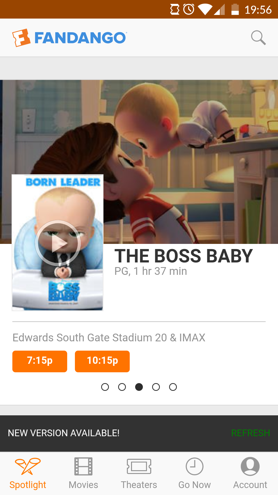
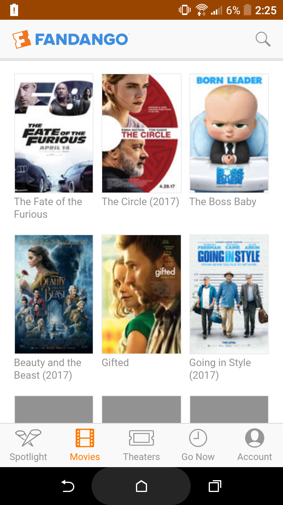
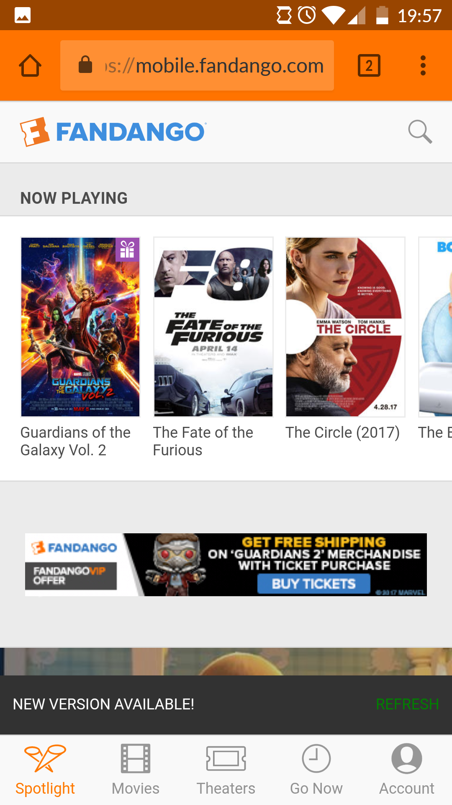
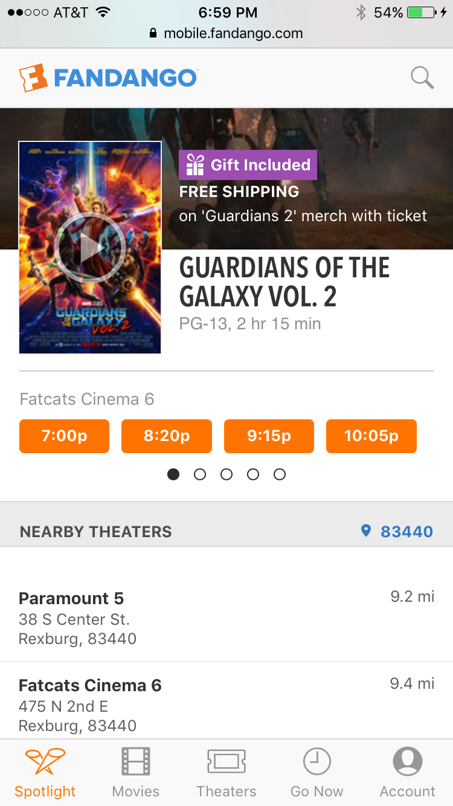

Design - Analysis Assessment
fandango.com
Design Principles
Proximity — Taylor Posivio
This photo is a great example of proximity because it shows how things in common are near each other. First the background image is for the movie they are promoting called “The Baby Boss” and on top of the background is a image of the movie poster with the name, rating, and length right next to it. The proximity of these items shows that these things are related have an important relationship together. Another example is the movie times and the theater name. The name being near the times shows an important proximity relationship because these times relate specifically to that theater.
Alignment — Ian Cunningham
Since there aren’t a whole lot of elements in this part of the main page, and although they aren’t directly connected to the navigation bar and footer elements, all the elements line up very well. All the movie icons have both edge alignment and center alignment. Not only that, but the link to the home page is aligned with the movie icons, the search button is in the upper right-hand corner, and the footer icons are in the first, second, third, fourth, and fifth vertical sections of the page. I also notice that the navigation bar’s line division makes it so that the search icon makes sense where it is, even though it is not right-aligned with the icons below it. This actually makes it easier to locate the search icon. One other thing I notice is that the navigation bar and footer are similar in size.
Repetition — Taylor Posivio
Repetition is all about using the same elements over and over to help make the website more uniform and appealing to users. In this shot you can see how repetition is used with font style and size, the movie picture size, the color scheme. Another one that can’t be seen from one screenshot is the use of side scrolling pictures. The entire site does a great job of using repetition to make the site easy to use and very user friendly.
Contrast — Chandler Tew

Here Fandango uses contrast as seen in orange. The logo up at the nav bar is orange, making it stand out. Also, the call to action buttons and links are all in orange, helping the user to identify points of interest like the "Buy Now" button. This guides them in making descions faster, because they know where to go and it also helps the owner of the site accomplish his purpose. It also helps them know where they are because the section they are in is highlighted in orange at the bottom.
Typography — Ryan Call
In this screenshot there are several forms of typography, be it in the size, style, kerning, and tracking of its text. To start off with the title of the movie “Guardians of the galaxy vol. 2,” is in all uppercase and spaced out invoking its importance. It is the first thing you see and your eyes are drawn to it first, then with its alignment to the left side the text continues to pull your eyes down. You see the rating and time in duller and smaller text and the page continues to flow smoothly with a location, times and other location options. Its new sections have bold words to bring your attention to them while not drawing too much focus away from the main title. These are the examples of typography shown in this screenshot
Site Purpose Statement
To help theatres gain more movie going traffic through a user-friendly interface, a list of movie theatres, and a list of movies playing and that will play. The consumer who visits this site wants to find a good movie playing near him/her and wants a ticket quickly and easily. Through Fandango and its features, that is possible and it saves people time.
Target Audience
- Age: 12-85
- Occupation: Movie enthusiasts and families
- Income: $1000 - $1,000,000 (Anyone with the means and desire to pay for a movie)
- Other: Usually spur of the moment movie goers who need/want information and tickets quickly and effortlessly. Also, for those who like to plan in advance, they will need accurate info days in advance.
Persona
- Name: Tod Williams
- Age: 26
- Occupation: Costco Supervisor and movie enthusiast
- Primary Device: Smart phone
- Quote: "After work, I like to get away from the grind. Fandango is a quick and easy way for me to see what's on and where and to get tickets.
- Other Info: Likes action, sci-fi, fantasy and horror films. Generally goes to the movies with his girlfriend, who likes chick-flicks and dramas.